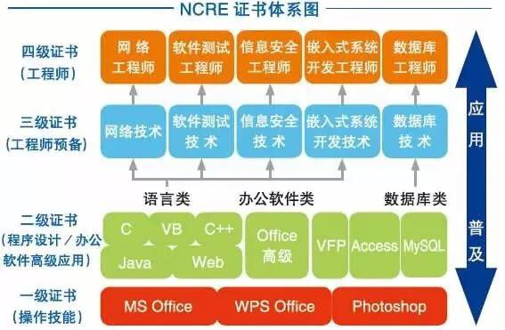

计算机二级证书到底有没有用？需要报考吗？
全国计算机等级考试（NCRE）是由教育部主办的，用来考察非计算机专业人员的计算机技能，它是被国家承认的。
1) 一级重点考察办公软件的基本使用，有 WPS、Microsoft Office、Photoshop 三个方向，报名时选择一个方向即可。
一级基本没人报名。
2) 二级重点考察编程语言、数据库的基本使用，或者办公软件的高级使用。
编程语言可以选择 C语言、C++、Java、Visual Basic 或者 Web 开发语言，数据库可以选择 Visual FoxPro、Access、MySQL，办公软件只能选择 Microsoft Office。
C语言、VB、Access 是报名最多的几个方向。
3) 三级有点倾向于实际应用，有网络技术、数据库技术、软件测试技术、信息安全技术、嵌入式系统五个方向，基本都需要有编程基础。
网络技术是报名最多的一个方向，因为这个方向比较简单，有不少记忆的内容。
4) 四级是三级的一个升级套餐，也有网络技术、数据库技术、软件测试技术、信息安全技术、嵌入式系统五个方向，不过考察的内容更加高级和深入，属于工程师级别，或者说是实际应用级别。
报考四级的也寥寥无几。
总起来说，一二级重在普及，三四级重在应用。
计算机二级对编程语言的考察重点是语法，是基础，这是任何一个程序员都应该具备的能力。二级证书是不是有用，要看你考了多少分：
最尴尬的是，二级证书分数一般，还在简历中大篇幅渲染，这足以看出你不是一个真正的程序员，因为你除了二级证书没有什么可以炫耀的了，你缺少硬核的编程知识，你缺少项目经验。没有项目经验就不是程序员，顶多是读过计算机专业的大学生。
再次强调，NCRE 针对的是非计算机专业人员，而程序员是专业的计算机人员，业内人士考取一个非专业的证书，而且成绩一般，你有什么好炫耀的，不觉得丢人吗？
我也面试过很多程序员，我的观点是：
二级证书虽然是针对非专业人员的，但是要想取得好成绩，还是要下一番功夫的。除了看书，还可以跟随C语言中文网发布的《C语言入门教程》学习。《C语言入门教程》已经发布了 8 年了，经历了 5 次大改版，累计阅读量超过 1000 万，已获得电子工业出版社、机械工业出版、清华大学出版社、人民邮电出版社等众多一线出版机构的出书邀约。
《C语言入门教程》是一套系统的课程，由获得征文比赛二等奖、拥有 10 年编程经验、曾拿下一线互联网公司 Offer 的程序员编写，它的知识点覆盖范围超过大部分书籍，语言功底超过大部分文案写手，既适合新手入门，也适合有经验的程序员进阶。
认真学习完《C语言入门教程》，计算机二级证书能够取得 95 分以上的优异成绩。
有些学校把计算机二级和 CET4 看得同等重要，必须有这两个证书才能毕业，那就没得选择了，只能去考了。
还有一些机关、事业单位在招聘时也要求有二级证书，以后甚至还会和职称（等级工资）挂钩。
更 NB 的是，这个证书在上海等部分城市落户可能会有加分，有加分，有加分。
你看，这个证书虽然不一定能代表你的专业水平，但是它还是有用的。所以我的建议是，最好还是把这个证书拿下来，万一以后用到呢？好吃不贵，作为餐前甜点，来它一份也无妨。
全国计算机等级考试官网：http://ncre.neea.edu.cn/NCRE 不是大学生的专利，它面向所有人群，任何年龄段、任何学历、任何职业的人群都可以报名。
NCRE 体系结构
NCRE 共分为四个等级：1) 一级重点考察办公软件的基本使用，有 WPS、Microsoft Office、Photoshop 三个方向，报名时选择一个方向即可。
一级基本没人报名。
2) 二级重点考察编程语言、数据库的基本使用，或者办公软件的高级使用。
编程语言可以选择 C语言、C++、Java、Visual Basic 或者 Web 开发语言，数据库可以选择 Visual FoxPro、Access、MySQL，办公软件只能选择 Microsoft Office。
C语言、VB、Access 是报名最多的几个方向。
3) 三级有点倾向于实际应用，有网络技术、数据库技术、软件测试技术、信息安全技术、嵌入式系统五个方向，基本都需要有编程基础。
网络技术是报名最多的一个方向，因为这个方向比较简单，有不少记忆的内容。
4) 四级是三级的一个升级套餐，也有网络技术、数据库技术、软件测试技术、信息安全技术、嵌入式系统五个方向，不过考察的内容更加高级和深入，属于工程师级别，或者说是实际应用级别。
报考四级的也寥寥无几。
总起来说，一二级重在普及，三四级重在应用。

计算机二级证书对程序员有用吗？
很多准程序员都想报考计算机二级，尤其是二级C语言，认为有了一个国家承认的证书，就容易找工作了。那么，事实是不是这样呢？计算机二级对编程语言的考察重点是语法，是基础，这是任何一个程序员都应该具备的能力。二级证书是不是有用，要看你考了多少分：
- 如果你的计算机二级只考了六七十分，刚过及格线，那还是不要在简历上写了，面试官问起来，直接拉低印象，一个程序员考这么点分数，怎么搞得。
- 如果你的计算机二级考了 95 分以上，那你可以把分数写出来，证明你的基础扎实，会让面试官刮目相看。
最尴尬的是，二级证书分数一般，还在简历中大篇幅渲染，这足以看出你不是一个真正的程序员，因为你除了二级证书没有什么可以炫耀的了，你缺少硬核的编程知识，你缺少项目经验。没有项目经验就不是程序员，顶多是读过计算机专业的大学生。
再次强调，NCRE 针对的是非计算机专业人员，而程序员是专业的计算机人员，业内人士考取一个非专业的证书，而且成绩一般，你有什么好炫耀的，不觉得丢人吗？
我也面试过很多程序员，我的观点是：
- 二级证书分数较低的话，不建议写在简历上。如果面试官问起，你就嘴硬一把，说自己不屑于考计算机二级，觉得掉价，适度的傲慢能提升你的个人形象。
- 二级证书分数一般的话，可以写在简历上，但是不要大肆渲染了，提一下即可。
- 二级证书分数优异的话，可以直接把分数写出来，这会让面试官记住你；如果你考 100 分，那面试官会非常惊讶。
二级证书虽然是针对非专业人员的，但是要想取得好成绩，还是要下一番功夫的。除了看书，还可以跟随C语言中文网发布的《C语言入门教程》学习。《C语言入门教程》已经发布了 8 年了，经历了 5 次大改版，累计阅读量超过 1000 万，已获得电子工业出版社、机械工业出版、清华大学出版社、人民邮电出版社等众多一线出版机构的出书邀约。
《C语言入门教程》是一套系统的课程，由获得征文比赛二等奖、拥有 10 年编程经验、曾拿下一线互联网公司 Offer 的程序员编写，它的知识点覆盖范围超过大部分书籍，语言功底超过大部分文案写手，既适合新手入门，也适合有经验的程序员进阶。
认真学习完《C语言入门教程》，计算机二级证书能够取得 95 分以上的优异成绩。
二级证书的其它用途
二级证书除了能在一定程序上展示程序员的实力，还有其它方面的一些用途。有些学校把计算机二级和 CET4 看得同等重要，必须有这两个证书才能毕业，那就没得选择了，只能去考了。
还有一些机关、事业单位在招聘时也要求有二级证书，以后甚至还会和职称（等级工资）挂钩。
更 NB 的是，这个证书在上海等部分城市落户可能会有加分，有加分，有加分。
你看，这个证书虽然不一定能代表你的专业水平，但是它还是有用的。所以我的建议是，最好还是把这个证书拿下来，万一以后用到呢？好吃不贵，作为餐前甜点，来它一份也无妨。
关注公众号「站长严长生」，在手机上阅读所有教程，随时随地都能学习。内含一款搜索神器，免费下载全网书籍和视频。

微信扫码关注公众号